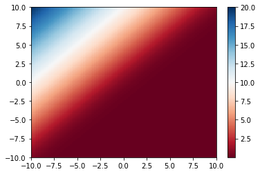

class: center, middle # Lecture 5: ## Recap: some basics .center[ Marc Lelarge] --- # Outline - Writing a module - Cross-entropy loss --- #Writing a module To create a module, one has to inherit from the base class `torch.nn.Module` and implement the constructor `__init__(self, ...)` and the forward pass `forward(self, x)`. Here is an example, we used for the digit recognizer in lesson 3: ``` import torch import torch.nn as nn import torch.nn.functional as F class classifier(nn.Module): def __init__(self): super(classifier, self).__init__() self.conv1 = nn.Conv2d(in_channels=1, out_channels=8, kernel_size=3, padding=1) self.fc = nn.Linear(in_features=128, out_features=2) def forward(self,x): x = self.conv1(x) x = F.max_pool2d(x, kernel_size=7, stride=7) x = x.view(-1, 4*4*8) x = self.fc(x) return F.log_softmax(x, dim=1) ``` --- Inheriting from `torch.nn.Module` provides many mechanisms implemented in the superclass. First, the `(...)` operator is redefined to call the `forward(...)` method. ``` conv_class = classifier() input = torch.empty(12,1,28,28).normal_() output = conv_class(input) print(output.size()) ``` prints -- ``` torch.Size([12, 2]) ``` --- All `Parameters` added as class attributes are seen by `Module.parameters()`. ``` for k in conv_class.parameters(): print(k.size()) ``` prints ``` torch.Size([8, 1, 3, 3]) torch.Size([8]) torch.Size([2, 128]) torch.Size([2]) ``` As long as you use autograd-compliant operations, the backward pass is implemented automatically. This is crucial to allow the update of the `Parameters` with your optimizer. Define a loss and an optimizer: ``` loss_fn = nn.NLLLoss() learning_rate = 1e-3 optimizer_cl = torch.optim.SGD(conv_class.parameters(), lr=learning_rate) ``` One step of gradient descent is done thanks to: ``` label = torch.randint(0,2,(12,)).type(torch.LongTensor) loss = loss_fn(output,label) optimizer_cl.zero_grad() loss.backward() optimizer_cl.step() ``` --- A basic trainig loop should look like: ``` def train(model,data_loader,loss_fn,optimizer,n_epochs=1): model.train(True) \...\ for epoch_num in range(n_epochs): \...\ for data in data_loader: inputs, labels = data outputs = model(inputs) loss = loss_fn(outputs,labels) optimizer.zero_grad() loss.backward() optimizer.step() \...\ ``` --- # Outline - Writing a module - Cross-entropy loss --- # Cross-entropy loss For a classifier with $C$ classes, our network output is $(f_1(x;w),\dots, f_C(x;w))$ on input $x$. We interpret $f_i(x;w)$ as the unnormalized log probability for input $x$ to belong to class $i$. More formally, we have $$ P_w(Y=i|X=x) = \frac{e^{f_i(x;w)}}{\sum_k e^{f_k(x;w)}}. $$ Given samples $(x_1,y_1),\dots , (x_N,y_N)$, what is a good loss to update the weights $w$? -- A natural candidate: $$ L(w) = -\frac{1}{N}\sum_{n=1}^N \log\left( P_w(Y=y_n|X=x_n\right). $$ --- # Cross-entropy The cross-entropy between two probability distributions $p$ and $q$ is defined as: $$ H(p,q) = -\sum_x p(x)\log q(x). $$ Hence by minimizing our loss, we minimize the cross-entropy between the empirical class probability and the estimated class probability. The empirical class probability is given by: $$ \frac{1}{N}{\Large \Sigma} \delta_{y_n}(.)1(X=x_n). $$ -- Note that: $$ H(p,q) = H(p) +D_{KL}(p||q). $$ --- The `torch.nn.NLLLoss` criterion implements $$ L(w) = -\frac{1}{N}{\Large \Sigma} f_{y_n}(x_n;w) $$ So combining it with the log soft-max function: $$ (\alpha_1,\dots, \alpha_C) \mapsto \left(\log\frac{\exp\alpha_1}{\sum_k \exp\alpha_k},\dots, \log\frac{\exp\alpha_C}{\sum_k \exp\alpha_k} \right) $$ gives the `torch.nn.CrossEntropyLoss` criterion. Hence, if you want your network to compute log-probabilities, take a `torch.nn.LogSoftmax` final layer and train it with `torch.nn.NLLLoss` loss. --- # BCE loss Consider the loss for a single sample in a binary classification problem, with a predictor with two output values $(o_1,o_2)$. If the sample is from class one, then we have for the loss in the plane $(o_1,o_2)$: .center[  ] $$ L = -\log \frac{e^{o_1}}{e^{o_1}+e^{o_2}} $$ --- class: end-slide, center count: false The end.